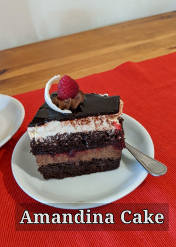
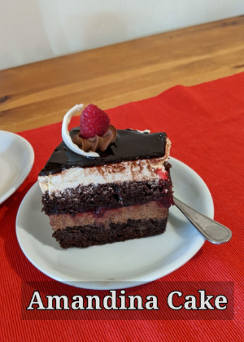
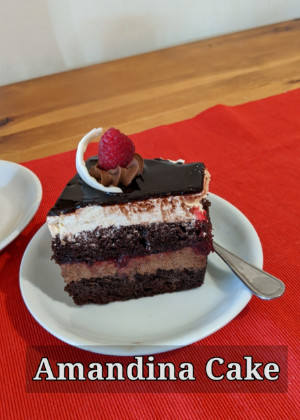
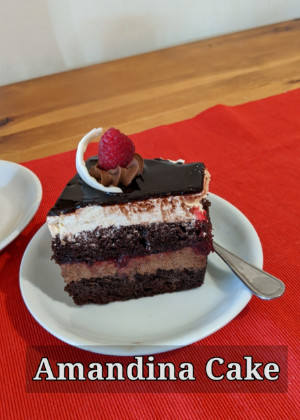

Couple of food dishes from Europe, from Transylvania, Traditional food plates for first and second course, as well delicios desserts. You could find the original taste, of course, if you travel across of europe or you can get the taste of them in your kitchen and serve them with family and friends. You can watch here a video about Romanian Cusine.